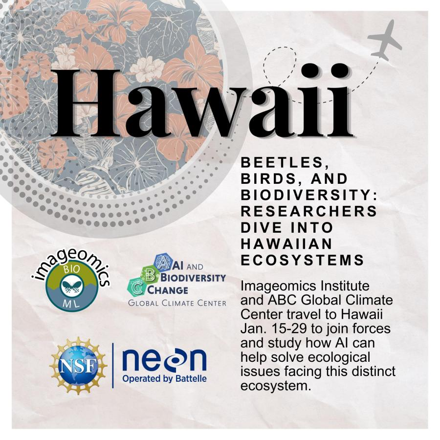

A team of researchers and students from the Imageomics Institute and the ABC Global Climate Center is heading to Hawaii this January, combining artificial intelligence and ecological research as part of the new course, “Experiential Introduction to AI and Ecology."
Developed by the Imageomics Institute, the course aims to advance conservation science through interdisciplinary collaboration and next-generation training. Supported by the U.S. National Science Foundation and the Natural Sciences and Engineering Research Council of Canada, it brings together participants from diverse disciplines to address pressing ecological challenges.
“This collaboration is a vital step toward integrating AI in ecological research, fostering a new generation of researchers dedicated to preserving our natural world,” said Tanya Berger-Wolf, Director of the Imageomics Institute and Ohio State professor.
The course is structured in three parts:
- A virtual segment covering foundational skills.
- A three-week field experience in Hawaii for immersive data collection.
- A concluding project phase focused on analyzing collected data.
The research expedition, stationed at the Pu’u Maka’ala Natural Area Reserve, serves as the centerpiece of the field experience. During this time, the team will tackle key projects such as automating the identification of invasive beetle species, analyzing Amakihi bird dialects, and exploring the success of koa tree restoration in promoting biodiversity.
Participants will also leverage the infrastructure and data provided by the National Ecological Observatory Network (NEON).
"This is an excellent opportunity for students to use NEON data and integrate cutting-edge AI tools into ecological research," said Paula Mabee, NEON’s Chief Scientist and Observatory Director.
Prior groundwork for the course began in May 2024, when Imageomics researchers traveled to Hawaii to meet with collaborators, outline projects, and establish the course’s foundation. Key partners include the Hawaii Division of Forestry and Wildlife, University of Hawaii, University of Maine, Cornell University, and the American Bird Conservancy.
Innovative Approach to Research
The Hawaii expedition embodies the course’s mission by blending theoretical learning with hands-on fieldwork. Faculty, graduate students, and undergraduates specializing in AI, ecology, and conservation science will deploy drones, collect bioacoustic data, and capture high-resolution imagery of flora and fauna.
“We’re applying AI to challenges that have historically been slow and labor-intensive,” said Dr. Sydne Record, one of the project leads. “From tracking invasive species to studying bird song patterns, these tools will allow us to address ecological questions more efficiently and at a much larger scale.”
Sam Stevens, an Ohio State graduate student working on beetle trait analysis, highlighted the potential broader impact.
"What we learn in Hawaii could have ripple effects for how we approach ecological science everywhere," he said
Next Steps
Preliminary results from the fieldwork are expected in the spring, with findings to be shared through public webinars, social media updates, and academic publications.
By merging the power of AI with ecological science, this innovative course promises to advance biodiversity monitoring and conservation efforts worldwide, beginning in Hawaii’s lush, ecologically rich landscapes.